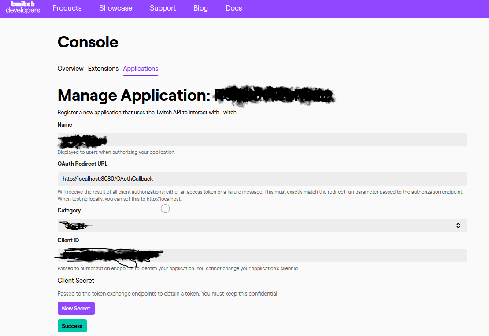

Tokens
Registering your app
to obtain a
client ID
and
client secret
.
Getting a token
. This includes specifying
scopes
, or the permissions your app requires.
Sending the token
in your API request, to authenticate API requests.
